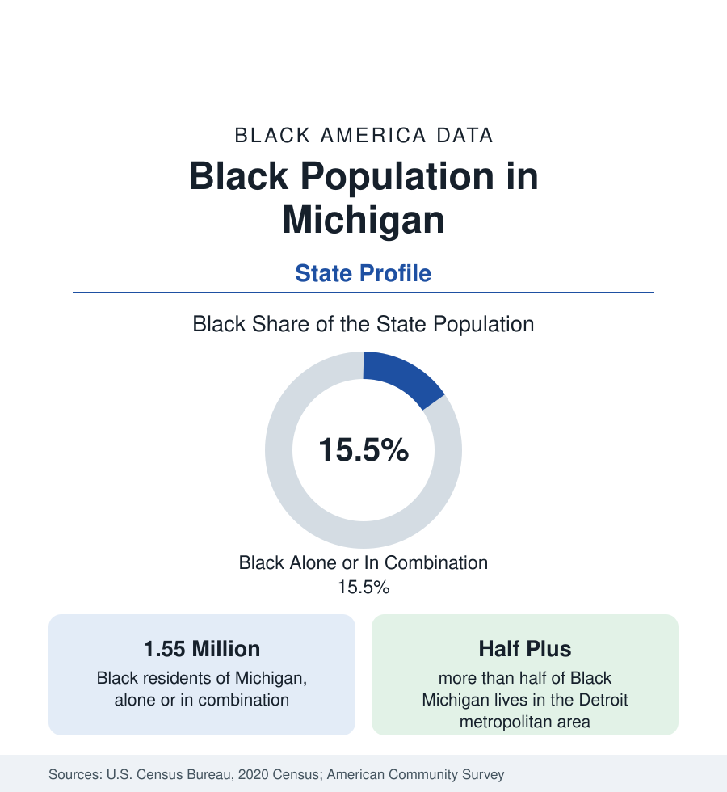

Black Census
Black Population in Michigan: Detroit's State
About 1.55 million Black Michiganders — nearly one in six residents — with more than half in metro Detroit and a belt of heavily Black small cities beyond. The census profile.

Michigan holds about 1.55 million Black residents — Black alone or in combination — nearly one in six of its people, with Black alone at about 1.36 million, or 13.6 percent. More than half live in metropolitan Detroit, profiled in the cities section; the rest form one of the most distinctive small-city landscapes in Black America — Flint, Saginaw, Benton Harbor, Muskegon, Kalamazoo, Jackson, Battle Creek — industrial cities where Black communities range from a fifth to more than four-fifths of the population. This article profiles the state population.
The Small-City Belt
Michigan's auto economy scattered Black population more widely than any other state's. The foundry and assembly cities each drew their migration-era communities: Flint, the General Motors company town, is more than half Black — a city of about 80,000 whose water crisis of the last decade is documented in this reference's public health data as a case study in infrastructure and health. Saginaw is roughly two-fifths Black; Benton Harbor, the small city on Lake Michigan's shore, is more than four-fifths Black — among the highest shares of any city in the North — facing its twin city St. Joseph across the river in one of the nation's starkest paired-city contrasts. Muskegon Heights approaches nine-tenths Black; Muskegon, Kalamazoo, Battle Creek, and Jackson each record shares near or above a fifth. Grand Rapids, the state's second city, is roughly a fifth Black with a growing community in its southeast districts and suburbs. Lansing, the capital, is roughly a fifth to a quarter Black, anchored by state government and the university economy at East Lansing's edge.
The Northern and Rural Map
Beyond the southern industrial tier, Black Michigan thins to the nation's background level. The Upper Peninsula and the northern Lower Peninsula record Black shares under 1 percent in most counties — among the smallest in the Midwest. The agricultural southwest holds the old communities of Cass County, where free Black settlements and Underground Railroad stations predated the Civil War and whose descendants remain. The college towns (Ann Arbor, East Lansing, Kalamazoo's Western Michigan) hold university-shaped Black populations: small shares, high attainment, in the pattern of Madison and Columbus at smaller scale.
Institutions: The HBCU Absence and Its Substitutes
Michigan has no operating HBCU — its one historically Black college, Detroit's Lewis College of Business, closed in the last decade — a gap this reference notes in several large Black-population states. The substitutes are substantial: the University of Michigan and Michigan State enroll large Black student populations; Wayne State, in Detroit, is the state's most direct institutional heir to the urban mission; and Eastern Michigan, Western Michigan, Grand Valley State, and Ferris State carry the broad middle of Black enrollment. The state's Black professional class — formed disproportionately in Detroit's institutions, its school system, the auto companies' salaried ranks, and the UAW's historic Black leadership — is the industrial Midwest's deepest.
Composition and Change
The estimates describe a state Black population roughly stable in total, redistributing in the now-standard pattern: Detroit's suburbs (in the city profile's account) gaining steadily, the small industrial cities declining with their totals — Flint, Saginaw, and Benton Harbor all smaller than a generation ago — and Grand Rapids and the capital region gaining modestly. Attainment and income figures track the auto economy's restructuring: the state's Black median income sits below the national Black figure, its poverty rates above, with the Detroit suburbs and Grand Rapids at the favorable end in the county data. The foreign-born share is small outside Detroit's African communities.
Reading the Michigan Numbers
The auto industry's structure shaped the community's internal data as well: unionized production wages built a Black homeowner class in the belt cities at rates the income tables of the 1970s recorded near the national middle, and the industry's long contraction is therefore legible in these cities' wealth data as a generational event, not merely an employment one.
Michigan's profile is Detroit plus a constellation: a set of small cities whose Black shares — half, two-fifths, four-fifths — exceed the famous metropolis's own, built by the same industry in miniature and exposed to its contraction at smaller scale and with thinner reserves. The state average of one in six is the least informative figure in this article; the city and county tables beneath it are the profile.
More in Black Census
The Black Population of the United States: Size, Definitions, and Distribution
The Black population of the United States totals 52.8 million — 15.4 percent of the nation. How the Census Bureau defines and counts the population, and where it lives.
Black Median Household Income in the United States
Black median household income stands at $56,490 in the Census Bureau's annual income report — how the figure is measured, how it compares, and what drives it.
The Black Poverty Rate: Levels, Children, and the Long Trend
The official Black poverty rate is 17.1 percent — against 11.1 percent nationally and 7.7 percent for non-Hispanic White Americans. How poverty is measured and what the data show.
Source: U.S. Census Bureau, 2020 Census; American Community Survey; Population Estimates Program.